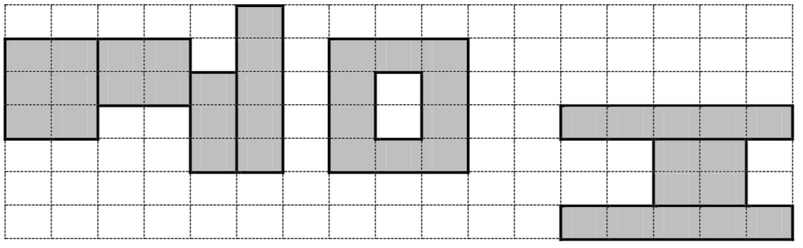

小E同学非常喜欢书法，他听说NOI2013已经开始了，想题一幅“NOI”的字送给大家。
小E有一张非常神奇的纸，纸可以用一个$𝑛$行$𝑚$列的二维方格矩阵来表示，为了描述方便，我们定义矩阵左下角方格坐标为($1,1$)，右上角方格坐标为($𝑚, 𝑛$)。矩阵的每个方格有一个整数的幸运值。在格子上面写字可以增加大家的幸运度，幸运度的大小恰好是所有被笔写到的方格的幸运值之和。现在你要在上面写上’N’,’O’,’I’三个字母。
下面给出3个书法字的定义：
1、’N’由若干($≥ 3$)个边平行于坐标轴的矩形组成，设由𝐾个矩形组成（标号1 ~𝐾），第$𝑖$个矩形的左下角方格坐标设为($𝐿_𝑖, 𝐵_𝑖$)，右上角坐标设为($𝑅_𝑖, 𝑇_𝑖$)，要求满足：
对任意$1<𝑖≤𝐾$，有$𝐿_𝑖=𝑅_{𝑖−1}+1$；
对任意$3≤𝑖<𝐾$，有$𝐵_{𝑖−1}−1≤𝑇_𝑖≤𝑇_{𝑖−1}，𝐵_𝑖≤𝐵_{𝑖−1}$；
$𝐵_2> 𝐵_1，𝑇_2= 𝑇_1，𝐵_{𝐾−1}= 𝐵_𝐾，𝑇_{𝐾−1}< 𝑇_𝐾$；
2、’O’由一个大矩形$A$，挖去一个小矩形$B$得到，这两个矩形的边都平行于坐标轴。设大矩形A左下角的方格坐标为($𝑢, 𝑣$)，长为$𝑊$，宽为$𝐻$，则小矩形$B$满足左下角方格坐标为($𝑢 + 1, 𝑣 + 1$)，长$𝑊 − 2$，宽$𝐻 − 2$。要求满足：
3、’I’为3个边平行于坐标轴的从下到上的实心矩形组成，从下到上依次标号为1,2,3，第$𝑖$个矩形的左下角格子坐标设为($𝑃_𝑖, 𝑄_𝑖$)，右上角格子坐标设为($𝐺_𝑖, 𝐻_𝑖$)，要求满足：
- $𝑃_𝑖≤𝐺_𝑖,𝑄_𝑖≤𝐻_𝑖$；
- $𝑃_1=𝑃_3>𝑢+𝑊,𝐺_1=𝐺_3$；
- $𝑄_1=𝐻_1=𝑄_2−1,𝐻_2+1=𝑄_3=𝐻_3$；
- $𝑃_1<𝑃_2≤𝐺_2<𝐺_1$
下图是一个’N’,’O’,’I’的例子。

另外，所有画的图形均不允许超过纸张的边界。现在小E想要知道，他能画出的最大幸运度是多少。
 Comet OJ
Comet OJ